About Me
相模原市在住。Webサイト制作に関する技術（HTML・CSS・Illustrator・Photoshop）は、職業訓練校の「Webサイト制作オンライン科 2025年7月〜9月」で習得しました。
これらのスキルは、事務・企画・広報など、さまざまな分野で“伝える力”として活かせると考えています。
作品制作では、情報を整理し、わかりやすく伝えるデザインを心がけています。
My Skill
Works
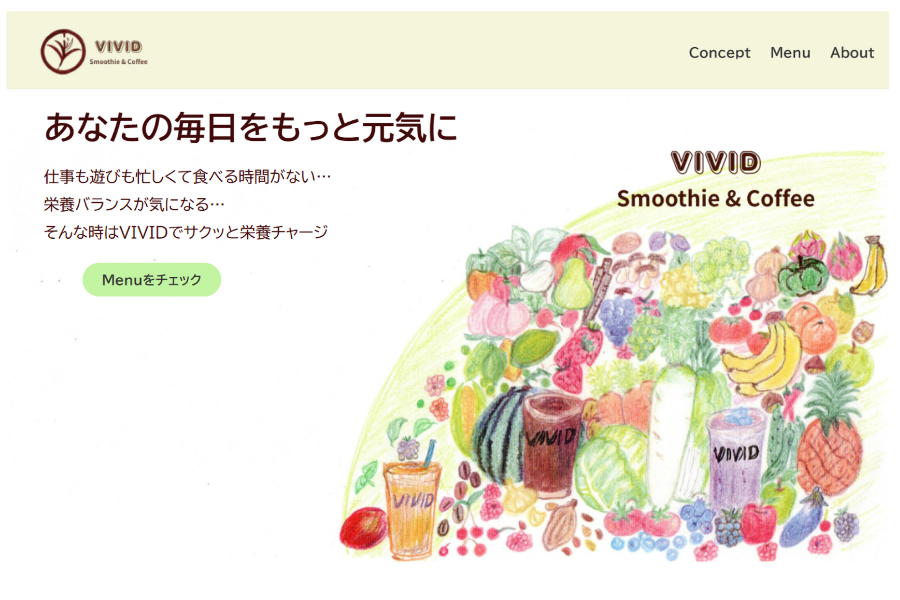
人生初Webサイト作品
受講1カ月目に制作したWebサイトです。課題はトップページの制作でした。「忙しくてゆっくり食事が摂れない」「栄養バランスや健康が気になる」 そんな方をターゲットに、手軽で美味しいスムージーを提供する駅ビル内のお店を想定しました。店名は「元気」を意味する “Vivid”。健康的で爽やかな雰囲気と心地よさを表現しています。 スマートフォンにも対応。イラストは色鉛筆画、写真はAI生成画像をCanvaで編集しました。
サイトを見る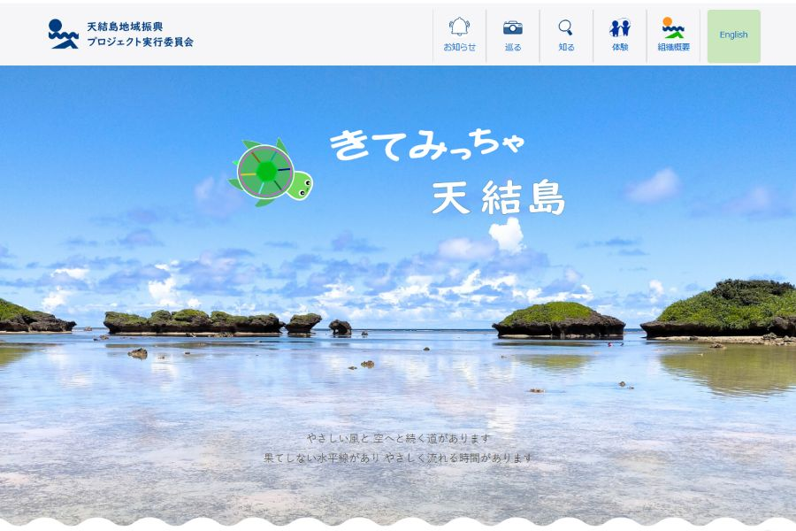
卒業制作WEBサイト
課題はトップページ＋1ページの構成でした。 交流を通じた地域振興と島の知名度向上を目指すNPOを想定し、Webサイトを制作しました。トップページでは、体験プログラムへの参加やコンタクトがしやすい設計に。もう1ページ「巡る」では、名所や風景を動きのある表現で印象づけました。スマートフォン対応。ユーザビリティも意識しています。アイコンはIllustratorで制作、写真はCanvaで編集しました。
サイトを見る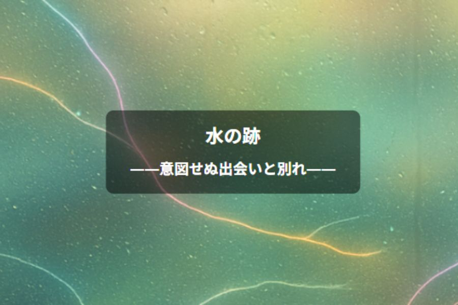
小説用Webサイト(日本語)
趣味で執筆したショートストーリーを掲載したWebサイトです。文章を読みやすくするため、テキストの幅や配色に配慮しました。フローティングボタンにはJavaScriptを使用し、文字サイズを2段階で調整できるように設計しています。また、スマートフォンにも対応しており、PCからスマートフォンへの閲覧移行がスムーズに行えるよう、ページ最下部にQRコードを配置しました。画像はAIで生成し、Canvaで編集しました。
サイトを見る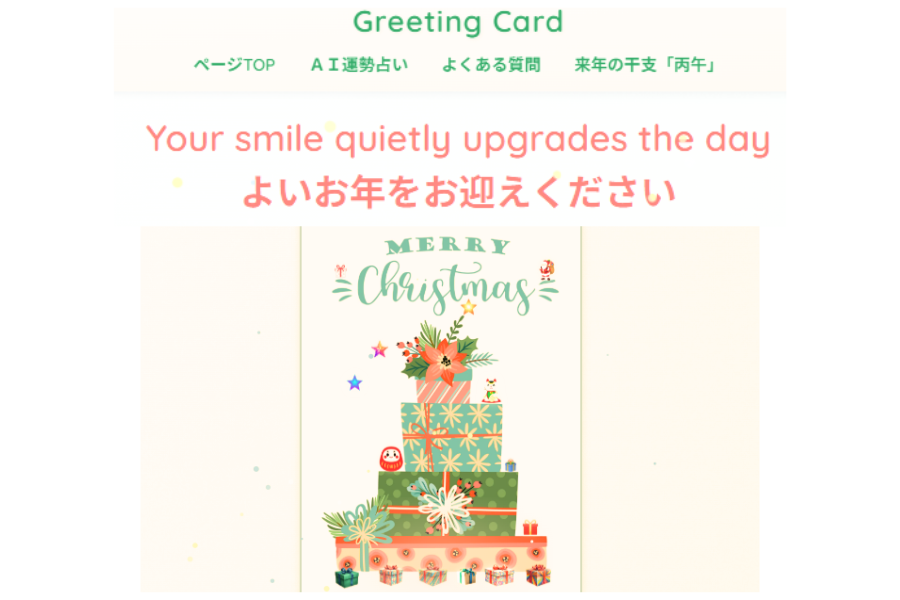
師走のご挨拶
『Greeting Card』を日本人向けにアレンジしたサイトです。Heroエリアは、プレゼントの山の画像上に15個の飾りアイコンを配置したもので、1枚の画像ではないため微調整が必要ですが、スマホやiPadなど日本で使用されている94％以上のタブレットに対応するようにしました。また、「AIが答える年末年始よくある質問」など読んで楽しんでもらうだけでなく、来訪者参加型の「AIが占うあなたの性格と来年の運勢」も取り入れ楽しめるようにしました。
サイトを見る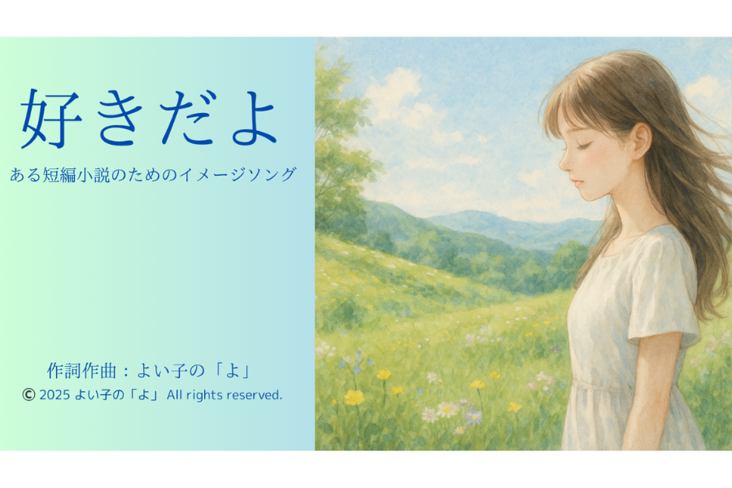
オリジナル曲
YouTubeで公開しているオリジナル曲です。楽器も弾けず、楽譜も読めず、音程にも自信がない… そんな“音楽三重苦”の私が、人生で初めて作った曲です。ふと浮かんだメロディーを形にする手段は、自分の歌声しかありませんでした。AIの力も借りながら、完全ではなくても、自分なりの想いを音に込めました。思い出として、いつでも聴けるようYouTubeにアップ。歌詞字幕などの編集はCanvaを使用しています。
動画を見る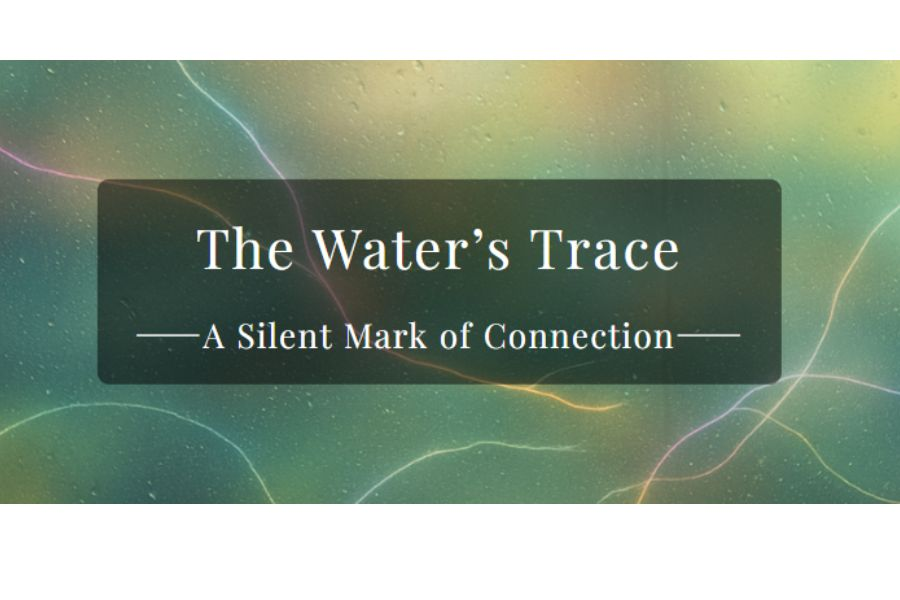
小説用Webサイト(英語)
趣味で執筆したショートストーリーを掲載したWebサイト（Webサイト作品 3）の英語版です。英語にすると文章が長くなるため、読みやすさを意識してテキスト幅や行間、配色を調整しました。また、読者が自然に文章に集中できるよう、段落ごとの余白や見出しの間隔も工夫し、表紙部分の画像も英語版用に入れ替えました。英語翻訳はChatGPTに相談しながら何度も校正を重ね、できるだけ日本語版に近づけるようにしました。
サイトを見る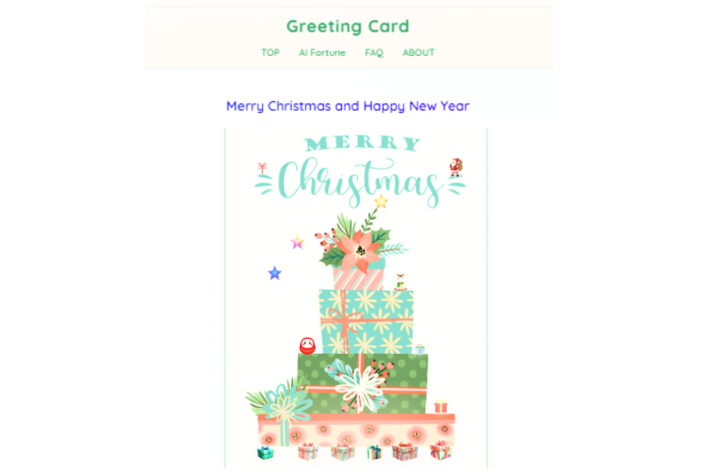
Greeting Card WEBサイト
このサイトは、依頼を受けて制作したイベント用サイトに似せ、個人利用のために作ったものです。「Christmas FAQ」と「ABOUT Christmas」の内容は、「欧米人が楽しめる内容」というプロンプトでAIに作成してもらいました。アメリカ人男性とスゥエ―デン人女性に見てもらい、ジョークとして受けることを確認しました。『師走のご挨拶』はこのサイトを日本風にアレンジしたものです。
サイトを見るgallery 色鉛筆画
気が向いたときや、ふと思いついたときに描いた作品の一部です。
描いたものは、すべてプレゼントして手許にはありません。
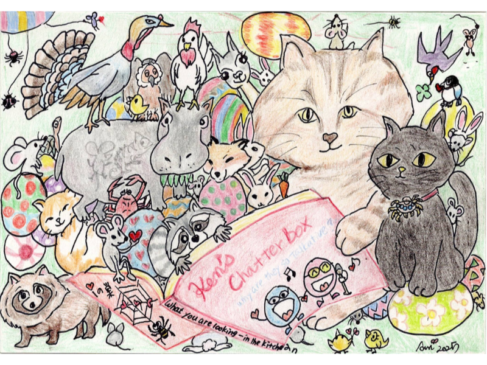
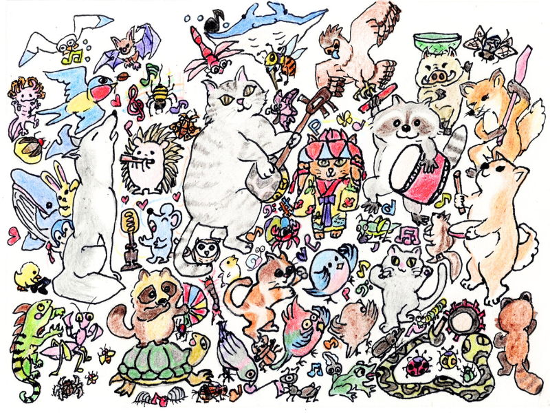
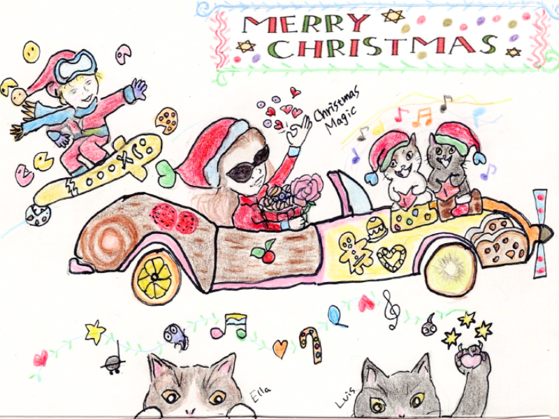
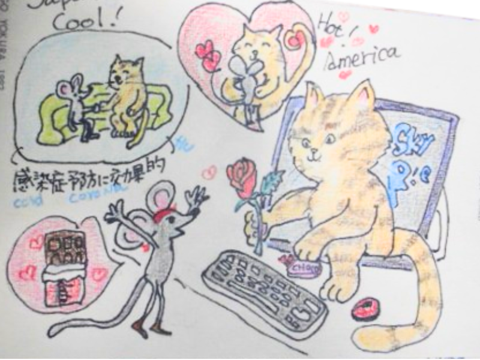
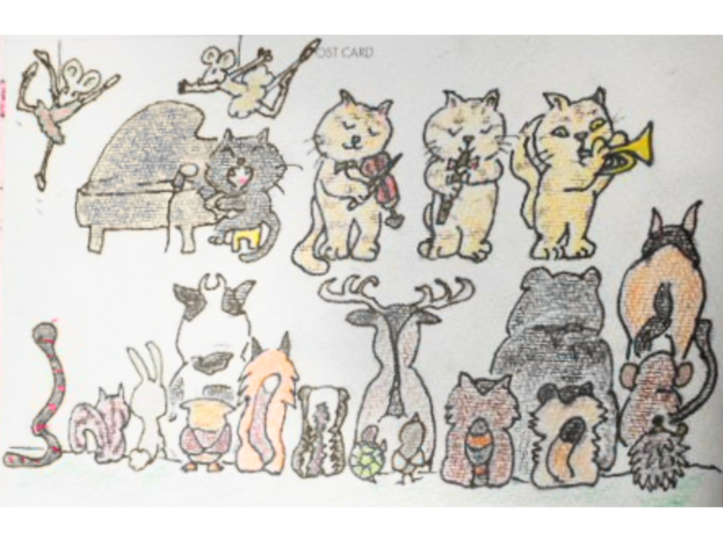
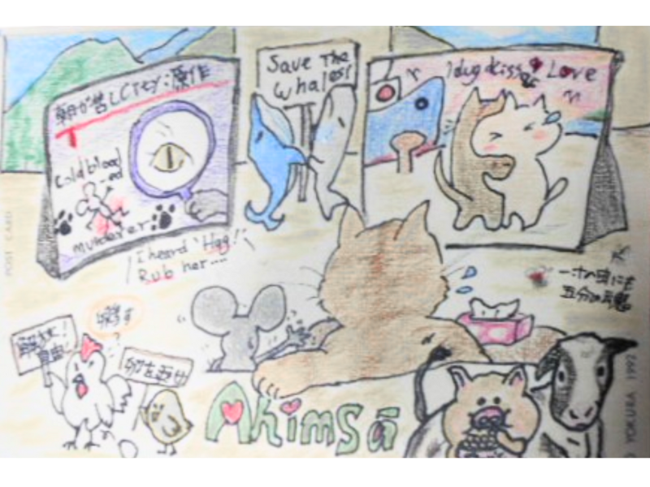
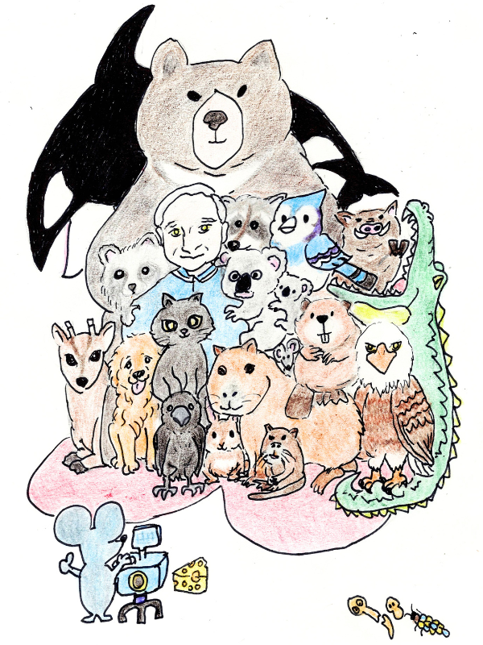
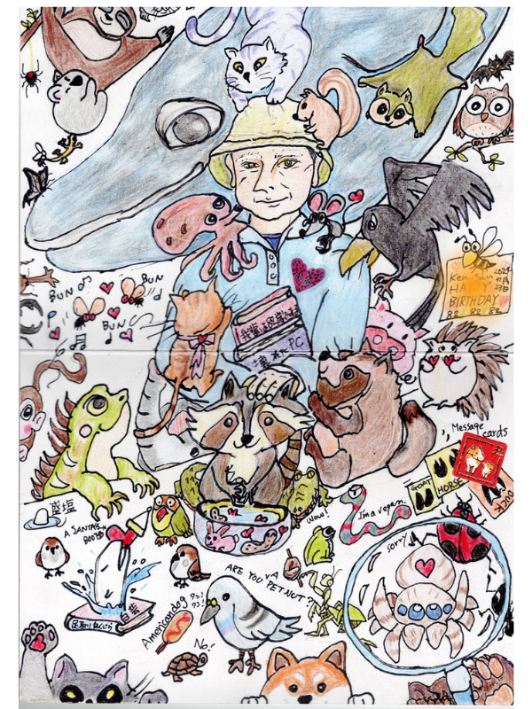
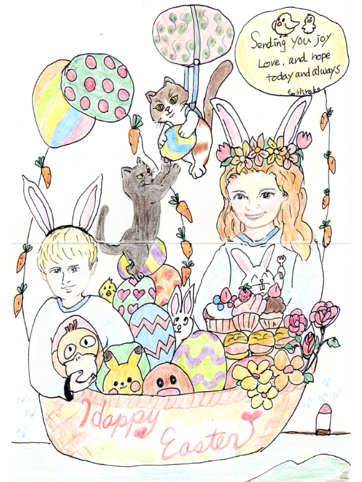
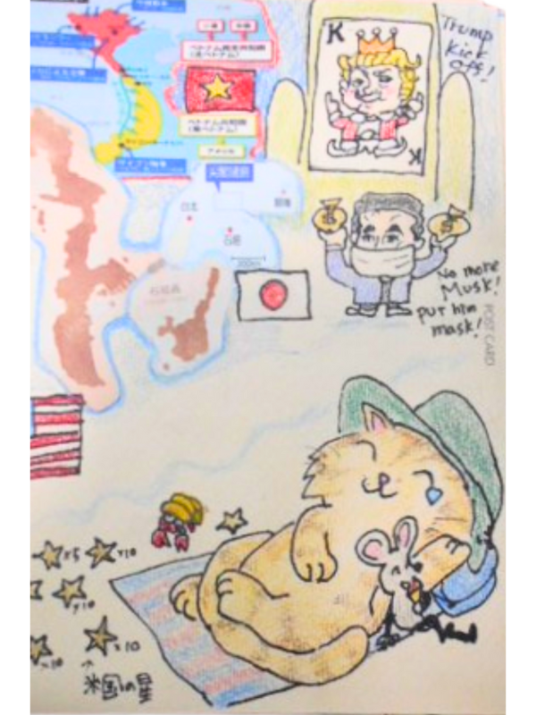
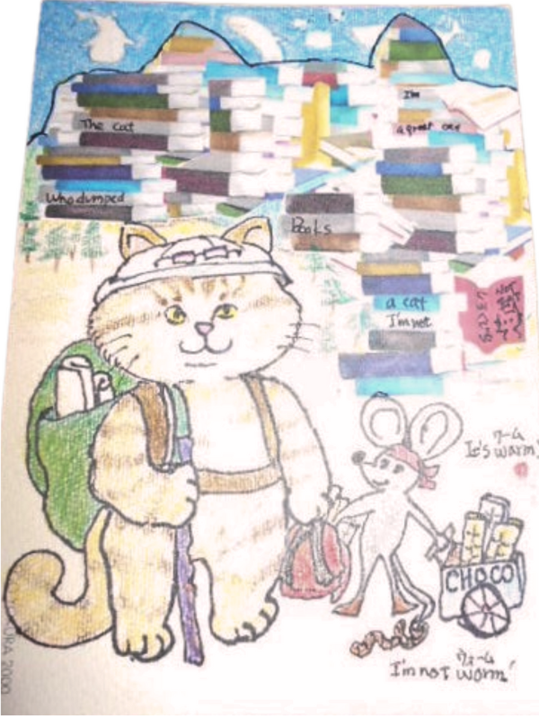
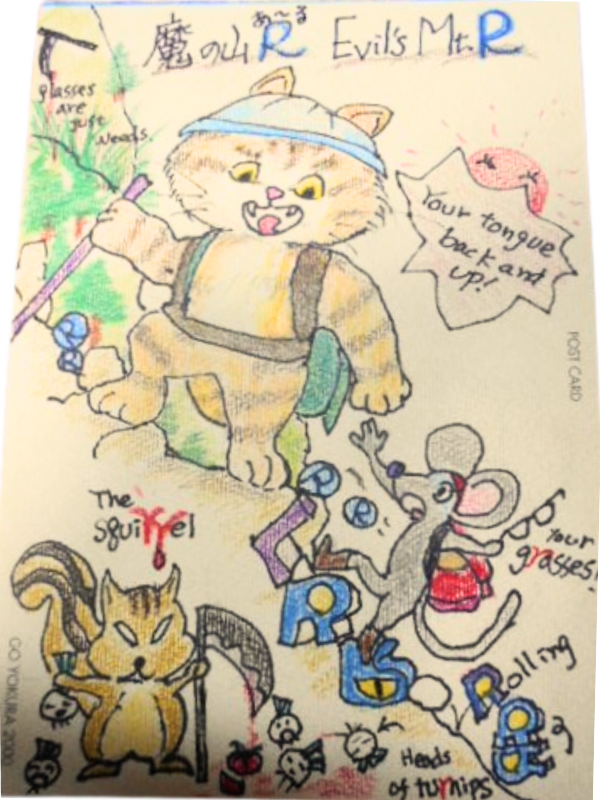